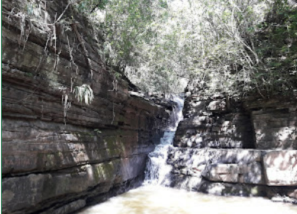
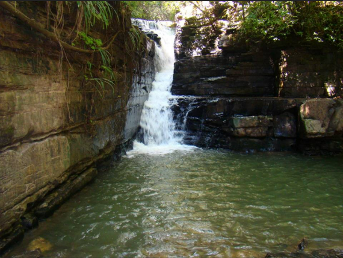
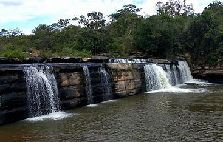
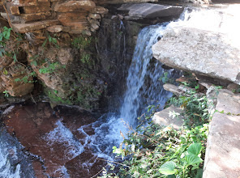
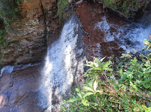

CACHOEIRAS EM TRÊS MARIAS MG
Para aproveitar ao máximo a visita às Cachoeiras de Três Marias, é recomendado levar itens essenciais, como: protetor solar, repelente, roupas confortáveis e calçados adequados para trilhas, além de alimentos frescos e frutas. Também é importante respeitar a natureza, preservar o local, não deixar lixo ou pertences para trás, mantendo-o limpo para as gerações futuras. Aventure-se, encante-se, relaxe e aproveite com consciência.
Cachoeira das Virgens
É um lugar lindo a cachoeira tem 3 quedas e outras quedas de menor porte e poços para banho...
 Caminho para lá
Cachoeira do Riachão
Localizada a apenas 40 km da cidade de Três Marias. Tem cerca de 3 metros de altura...

Caminho para lá
Cachoeira da Barreirama
A cachoeira da Barreirama fica localizada na fazenda de mesmo nome...
 Caminho para lá